Introduction to AI and machine learning
AI for environmental data, Uppsala University
Olof Mogren, RISE Research Institutes of Sweden
1 mogren.ml, olof.mogren@ri.se, 2025-09-17
Loading.
PYMD slides requires a javascript-enabled browser.
Usage: Arrow buttons, page up/down, or space to navigate.
F for fullscreen. B for blank. Click on leftmost quarter for previous slide, the rest for next.
More info: see https://github.com/olofmogren/pymdslides/ .
 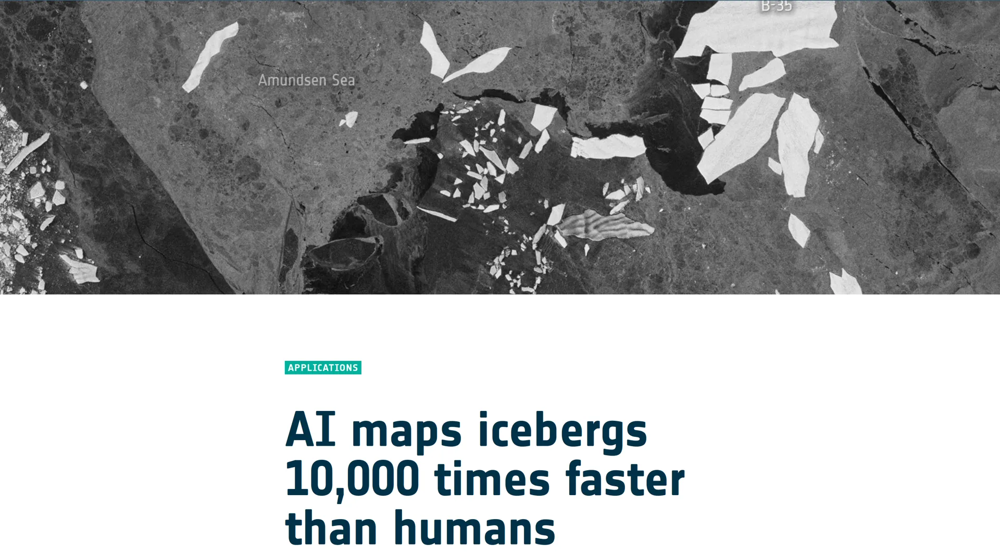
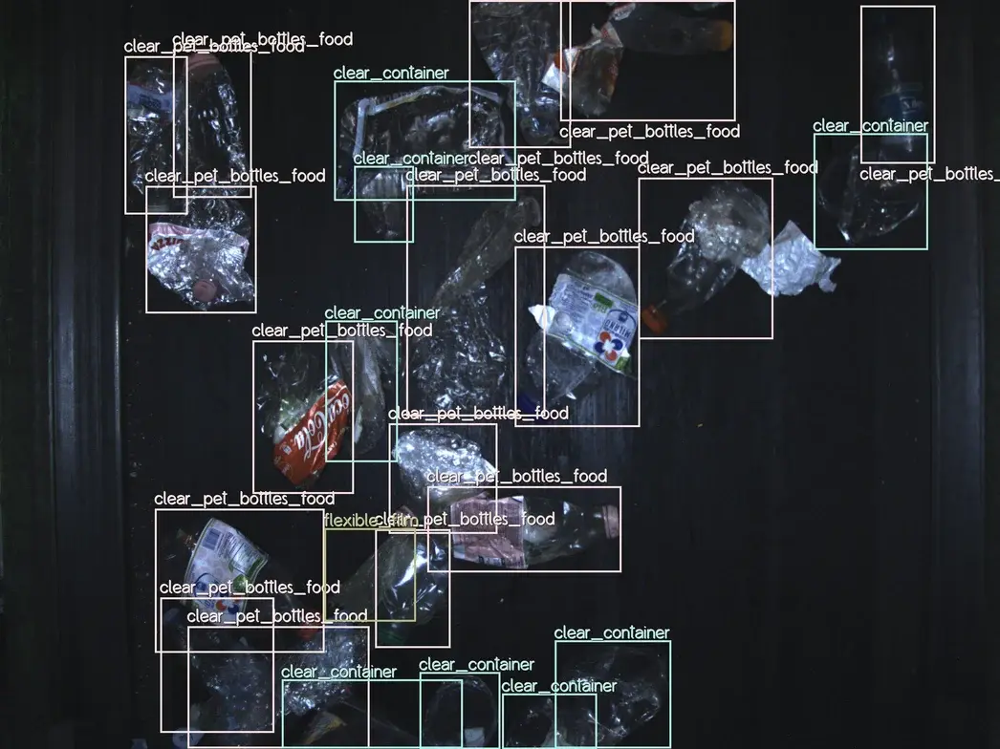
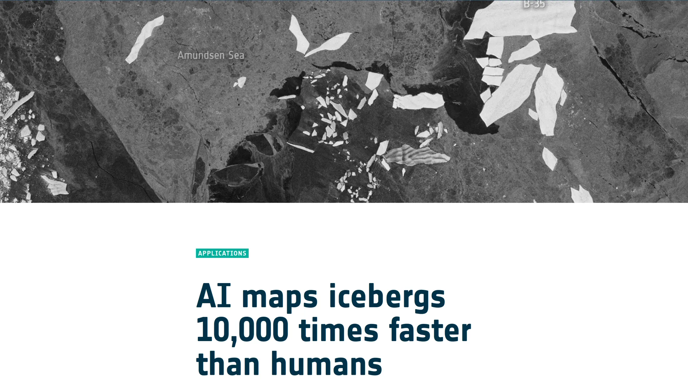
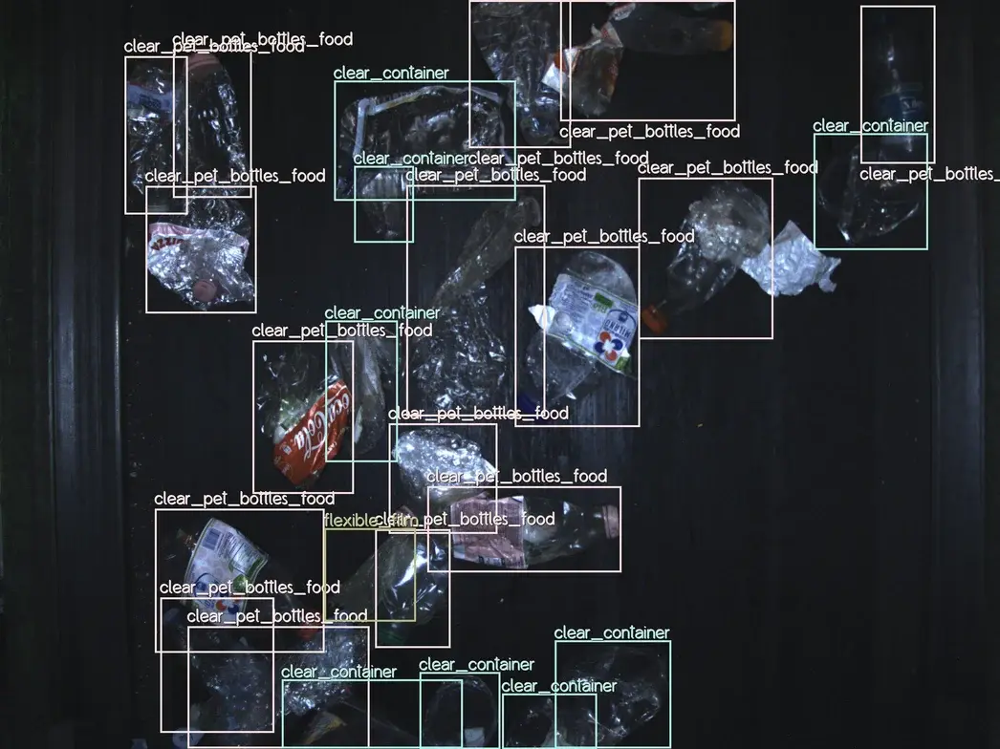

 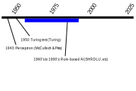
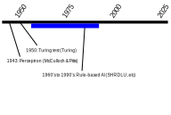
 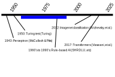
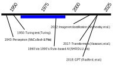
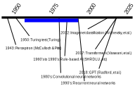
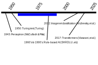
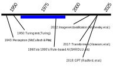
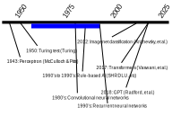
 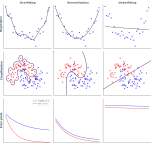
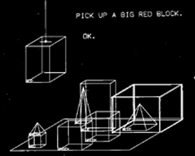
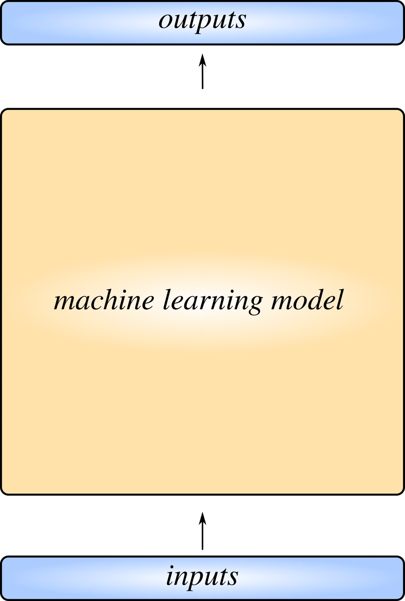
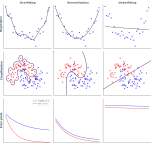
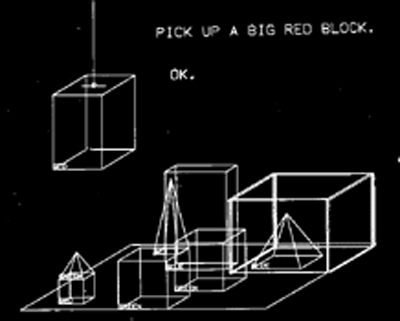
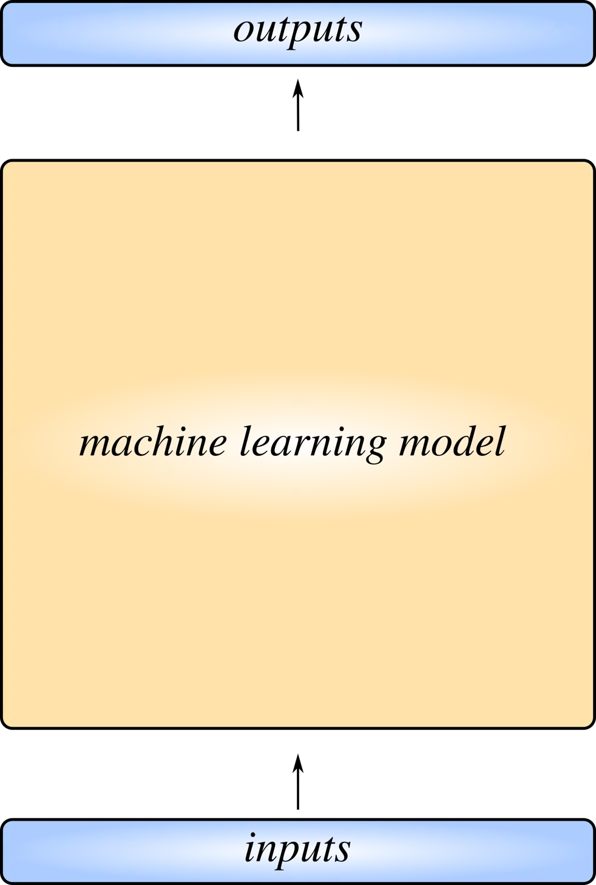

 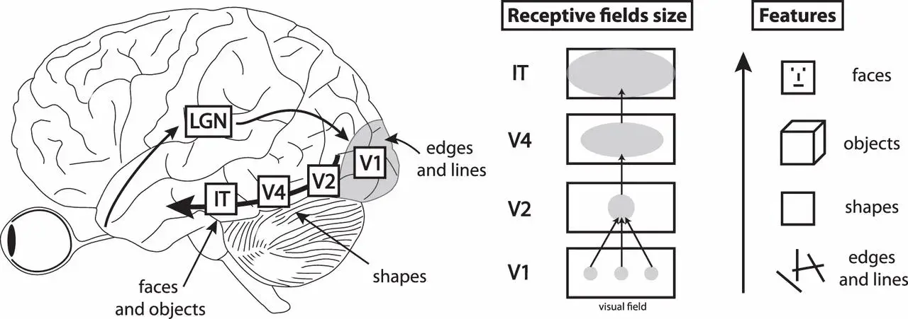
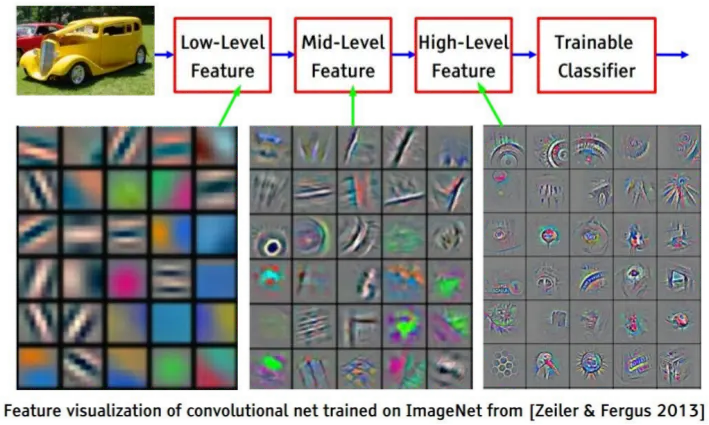
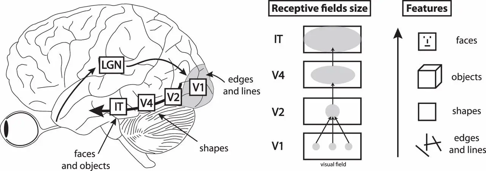
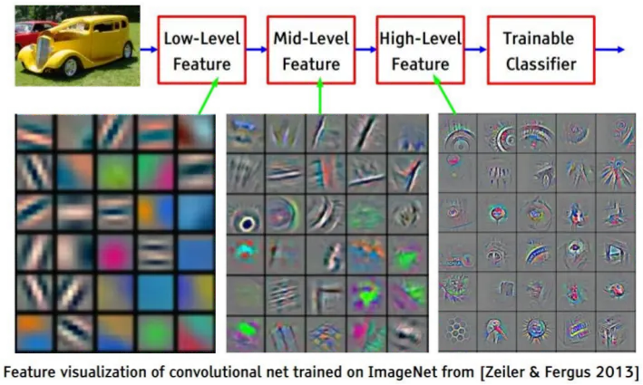